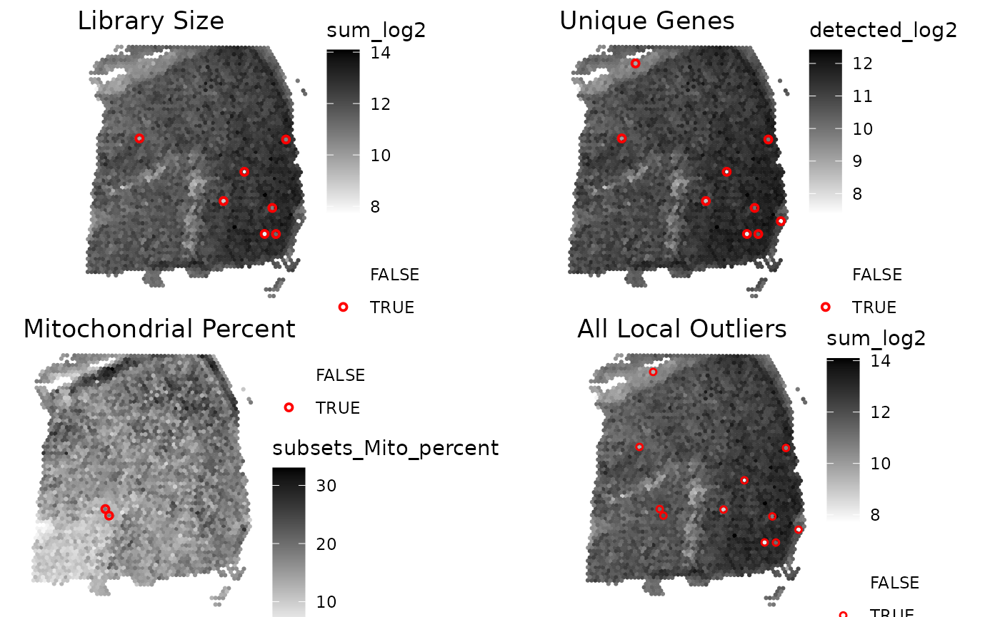

Getting started with 'SpotSweeper'
Michael Totty
Johns Hopkins Bloomberg School of Public Health, Baltimore, MD, USABoyi Guo
Johns Hopkins Bloomberg School of Public Health, Baltimore, MD, USAStephanie Hicks
Johns Hopkins Bloomberg School of Public Health, Baltimore, MD, USA2024-02-15
Source:vignettes/getting_started.Rmd
getting_started.RmdInput data format
In the examples below, we assume the input data are provided as a SpatialExperiment
(SPE) object. The outputs for spot-level outliers and artifacts are
stored in the colData of the SPE object.
Spot-level local outlier detection
This is an example workflow showing how to detect and visualize local outliers in 10X Genomics Visium data.
library(SpotSweeper)
# load Maynard et al DLPFC daatset
spe <- STexampleData::Visium_humanDLPFC()
# change from gene id to gene names
rownames(spe) <- rowData(spe)$gene_name
# show column data before SpotSweeper
colnames(colData(spe))
#> [1] "barcode_id" "sample_id" "in_tissue" "array_row" "array_col"
#> [6] "ground_truth" "cell_count"
# drop out-of-tissue spots
spe <- spe[, spe$in_tissue == 1]
spe <- spe[, !is.na(spe$ground_truth)]SpotSweeper can be run on an SPE object with the following code. This
outputs the local_outliers in the colData of the SPE
object. Selecting data_output=TRUE exports z-transformed QC
metrics as well.
# Identifying the mitochondrial transcripts in our SpatialExperiment.
is.mito <- rownames(spe)[grepl("^MT-", rownames(spe))]
# Calculating QC metrics for each spot using scuttle
spe<- scuttle::addPerCellQCMetrics(spe, subsets=list(Mito=is.mito))
colnames(colData(spe))
#> [1] "barcode_id" "sample_id" "in_tissue"
#> [4] "array_row" "array_col" "ground_truth"
#> [7] "cell_count" "sum" "detected"
#> [10] "subsets_Mito_sum" "subsets_Mito_detected" "subsets_Mito_percent"
#> [13] "total"
# Identifying local outliers using SpotSweeper
features <- c('sum' ,'detected', "subsets_Mito_percent")
spe<- localOutliers(spe,
features=features,
n_neighbors=18,
data_output=TRUE,
method="multivariate"
)
# show column data after SpotSweeper
colnames(colData(spe))
#> [1] "barcode_id" "sample_id"
#> [3] "in_tissue" "array_row"
#> [5] "array_col" "ground_truth"
#> [7] "cell_count" "sum"
#> [9] "detected" "subsets_Mito_sum"
#> [11] "subsets_Mito_detected" "subsets_Mito_percent"
#> [13] "total" "sum_log2"
#> [15] "detected_log2" "subsets_Mito_percent_log2"
#> [17] "coords" "local_outliers"
#> [19] "sum_z" "detected_z"
#> [21] "subsets_Mito_percent_z" "LOF"We can now visualize local_outliers vs one of the QC
metrics, sum_log2, with help from the escheR
package.
library(escheR)
library(ggpubr)
# plotting using escheR
p1 <- make_escheR(spe) |>
add_fill(var = "sum_log2", point_size=1.25) +
scale_fill_gradient(low ="white",high = "darkgreen")
p2 <- make_escheR(spe) |>
add_fill(var = "sum_log2", point_size=1.25) |>
add_ground(var = "local_outliers", stroke = 1) +
scale_color_manual(
name = "", # turn off legend name for ground_truth
values = c(
"TRUE" = "red",
"FALSE" = "transparent")
) +
scale_fill_gradient(low ="white",high = "darkgreen")
plot_list <- list(p1, p2)
ggarrange(
plotlist = plot_list,
ncol = 2, nrow = 1,
common.legend = FALSE
)
Session information
utils::sessionInfo()
#> R version 4.3.2 (2023-10-31)
#> Platform: x86_64-pc-linux-gnu (64-bit)
#> Running under: Ubuntu 22.04.3 LTS
#>
#> Matrix products: default
#> BLAS: /usr/lib/x86_64-linux-gnu/openblas-pthread/libblas.so.3
#> LAPACK: /usr/lib/x86_64-linux-gnu/openblas-pthread/libopenblasp-r0.3.20.so; LAPACK version 3.10.0
#>
#> locale:
#> [1] LC_CTYPE=C.UTF-8 LC_NUMERIC=C LC_TIME=C.UTF-8
#> [4] LC_COLLATE=C.UTF-8 LC_MONETARY=C.UTF-8 LC_MESSAGES=C.UTF-8
#> [7] LC_PAPER=C.UTF-8 LC_NAME=C LC_ADDRESS=C
#> [10] LC_TELEPHONE=C LC_MEASUREMENT=C.UTF-8 LC_IDENTIFICATION=C
#>
#> time zone: UTC
#> tzcode source: system (glibc)
#>
#> attached base packages:
#> [1] stats4 stats graphics grDevices utils datasets methods
#> [8] base
#>
#> other attached packages:
#> [1] ggpubr_0.6.0 escheR_1.2.0
#> [3] ggplot2_3.4.4 STexampleData_1.10.0
#> [5] SpatialExperiment_1.12.0 SingleCellExperiment_1.24.0
#> [7] SummarizedExperiment_1.32.0 Biobase_2.62.0
#> [9] GenomicRanges_1.54.1 GenomeInfoDb_1.38.6
#> [11] IRanges_2.36.0 S4Vectors_0.40.2
#> [13] MatrixGenerics_1.14.0 matrixStats_1.2.0
#> [15] ExperimentHub_2.10.0 AnnotationHub_3.10.0
#> [17] BiocFileCache_2.10.1 dbplyr_2.4.0
#> [19] BiocGenerics_0.48.1 SpotSweeper_0.99.1
#>
#> loaded via a namespace (and not attached):
#> [1] DBI_1.2.1 bitops_1.0-7
#> [3] rlang_1.1.3 magrittr_2.0.3
#> [5] compiler_4.3.2 RSQLite_2.3.5
#> [7] DelayedMatrixStats_1.24.0 png_0.1-8
#> [9] systemfonts_1.0.5 vctrs_0.6.5
#> [11] stringr_1.5.1 pkgconfig_2.0.3
#> [13] crayon_1.5.2 fastmap_1.1.1
#> [15] backports_1.4.1 magick_2.8.2
#> [17] XVector_0.42.0 ellipsis_0.3.2
#> [19] labeling_0.4.3 scuttle_1.12.0
#> [21] utf8_1.2.4 promises_1.2.1
#> [23] rmarkdown_2.25 ragg_1.2.7
#> [25] purrr_1.0.2 bit_4.0.5
#> [27] xfun_0.42 beachmat_2.18.0
#> [29] zlibbioc_1.48.0 cachem_1.0.8
#> [31] jsonlite_1.8.8 blob_1.2.4
#> [33] highr_0.10 later_1.3.2
#> [35] DelayedArray_0.28.0 BiocParallel_1.36.0
#> [37] interactiveDisplayBase_1.40.0 broom_1.0.5
#> [39] parallel_4.3.2 R6_2.5.1
#> [41] bslib_0.6.1 stringi_1.8.3
#> [43] car_3.1-2 jquerylib_0.1.4
#> [45] Rcpp_1.0.12 knitr_1.45
#> [47] httpuv_1.6.14 Matrix_1.6-1.1
#> [49] tidyselect_1.2.0 abind_1.4-5
#> [51] yaml_2.3.8 codetools_0.2-19
#> [53] curl_5.2.0 lattice_0.21-9
#> [55] tibble_3.2.1 shiny_1.8.0
#> [57] withr_3.0.0 KEGGREST_1.42.0
#> [59] evaluate_0.23 desc_1.4.3
#> [61] Biostrings_2.70.2 pillar_1.9.0
#> [63] BiocManager_1.30.22 filelock_1.0.3
#> [65] carData_3.0-5 generics_0.1.3
#> [67] dbscan_1.1-12 RCurl_1.98-1.14
#> [69] BiocVersion_3.18.1 munsell_0.5.0
#> [71] scales_1.3.0 sparseMatrixStats_1.14.0
#> [73] xtable_1.8-4 glue_1.7.0
#> [75] tools_4.3.2 BiocNeighbors_1.20.2
#> [77] ggsignif_0.6.4 fs_1.6.3
#> [79] cowplot_1.1.3 grid_4.3.2
#> [81] tidyr_1.3.1 colorspace_2.1-0
#> [83] AnnotationDbi_1.64.1 GenomeInfoDbData_1.2.11
#> [85] cli_3.6.2 rappdirs_0.3.3
#> [87] textshaping_0.3.7 fansi_1.0.6
#> [89] viridisLite_0.4.2 S4Arrays_1.2.0
#> [91] dplyr_1.1.4 gtable_0.3.4
#> [93] rstatix_0.7.2 sass_0.4.8
#> [95] digest_0.6.34 SparseArray_1.2.4
#> [97] farver_2.1.1 rjson_0.2.21
#> [99] memoise_2.0.1 htmltools_0.5.7
#> [101] pkgdown_2.0.7 lifecycle_1.0.4
#> [103] httr_1.4.7 mime_0.12
#> [105] bit64_4.0.5 MASS_7.3-60